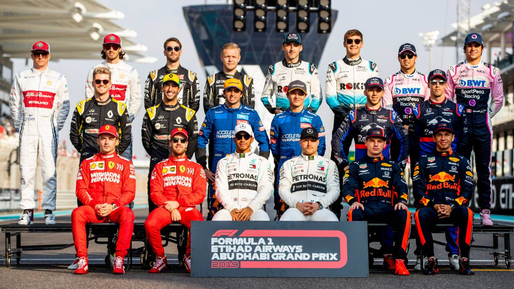

Top 20 mundial
Seis equipos de F1 aún no han definido su alineación para la temporada 2021. Analicemos la situación del mercado tras el GP de Italia: sorprende el retraso con el que Mercedes afronta la renovación de Lewis Hamilton. No hay desacuerdo sobre el dinero, sino sobre la duración del contrato. Oficialmente, aún quedan ocho asientos por asignar de cara a la temporada 2021 (nueve si condideramos las dudas en el caso Sebastian Vettel-Sergio Pérez con Racing Point). El mercado avanza lentamente debido al retraso del inicio del Mundial 2020, y con casi la mitad de los lugares aún por definirse, en el paddock hay muchas negociaciones que involucran a seis equipos. En algunos casos, las opciones ya se han tomado y se está trabajando en los detalles contractuales, en otros contextos las evaluaciones todavía están en curso. Veamos equipo a equipo cómo se ve la situación en vísperas del fin de semana de Mugello.